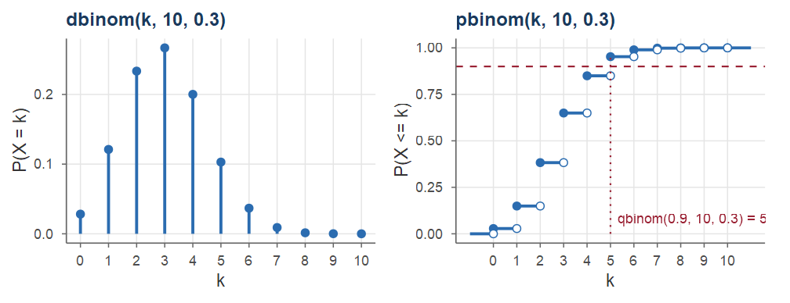
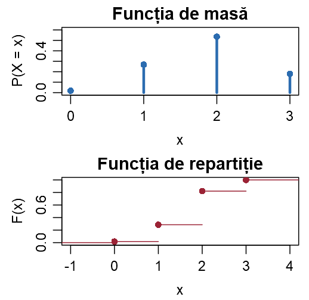
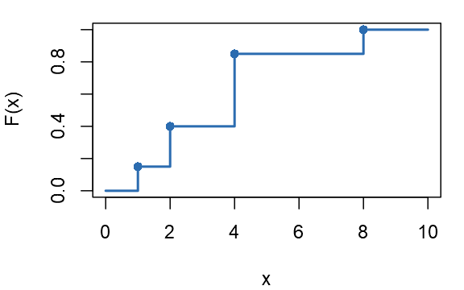
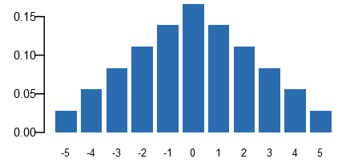
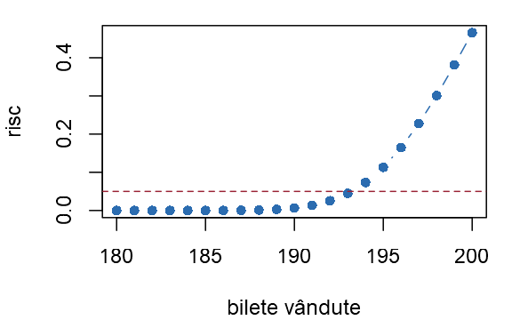
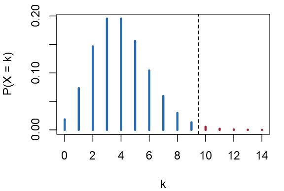
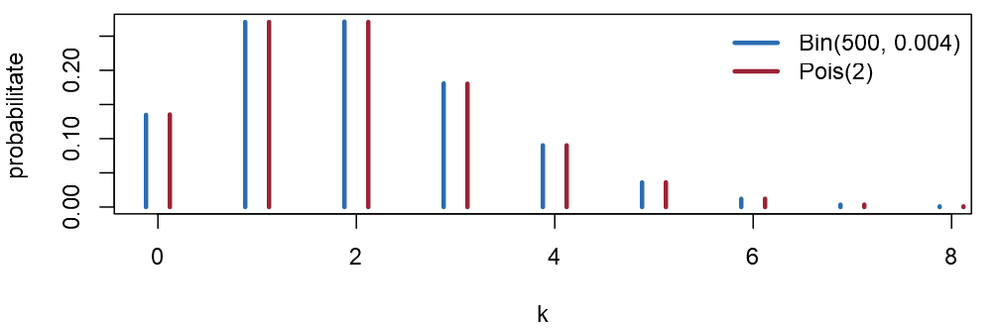
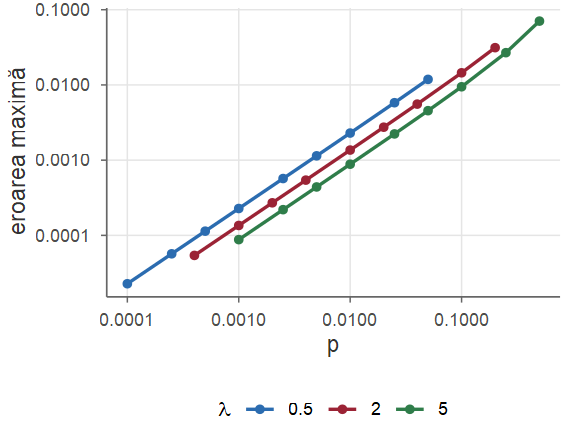

Probabilități și Statistică · Seminarul 3 (seminar și laborator)
Universitatea din București · Facultatea de Matematică și Informatică · 2026–2027
Punem la lucru noțiunile din Cursul 3: recunoaștem modelul, calculăm cu formulele din curs și regăsim rezultatele în R. Fiecare exercițiu are o rezolvare Seminar și una Laborator.
| Tema | Exerciții |
|---|---|
| Breviar | rezultatele din Cursul 3; funcțiile d, p, q, r |
| Funcția de masă și funcția de repartiție | 1–3: bile albe, de la funcția de repartiție la tabel, diferența a două zaruri |
| Binomială și hipergeometrică | 4–6: test grilă, suprarezervarea unui zbor, controlul unui lot |
| Geometrică și negativ binomială | 7 și 8: până la primul succes, un mesaj din trei pachete |
| Poisson și aproximarea Poisson | 9–11: cereri către un server, aproximarea binomialei, zile de naștere |
| Studiu individual și temă | exerciții suplimentare, temă, recapitulare |
La sfârșitul ședinței studentul trebuie să poată:
d, p, q, r, ținând cont de convențiile pentru repartițiile geometrică, negativ binomială și hipergeometrică;sample(..., prob = p), funcțiile r...) și compara frecvențele relative cu funcția de masă;Toate rezultatele sunt demonstrate în Cursul 3.
x și p: cumsum(p) dă valorile lui \(F\), diff(c(0, Fx)) salturile, iar sample(x, B, replace = TRUE, prob = p) generează \(B\) valori.binom, hyper, geom, nbinom, pois): dbinom(k, n, p) \(=\PP(X=k)\); pbinom(k, n, p) \(=\PP(X\le k)\); qbinom(u, n, p) = cel mai mic \(k\) cu \(\PP(X\le k)\ge u\) (cuantila, Cursul 4); rbinom(B, n, p) = \(B\) valori aleatoare.dgeom(k - 1, p), \(\PP(X\le n)=\) pgeom(n - 1, p), simulare: rgeom(1, p) + 1; \(\PP(X=k)=\) dnbinom(k - r, r, p), \(\PP(X\le n)=\) pnbinom(n - r, r, p).dhyper(x, M, N - M, n) — al treilea argument este numărul de bile albe, nu numărul total.dbinom, pbinom și qbinom pe un grafic
Pentru \(\Bin(10,0.3)\): dbinom dă înălțimile bețelor, pbinom înălțimile treptelor, iar qbinom(u, ...) citește graficul lui \(F\) „invers”: prima valoare \(k\) la care treapta atinge nivelul \(u\) (aici \(u=0.9\), deci \(k=5\)).
Dintr-o urnă cu \(5\) bile albe și \(3\) bile negre se extrag la întâmplare, simultan (deci fără întoarcere), \(3\) bile. Fie \(X\) numărul de bile albe extrase.
Seminar Modelul. Un rezultat este o submulțime de \(3\) bile dintre cele \(8\): \(|\Omega|=\binom83=\frac{8\cdot7\cdot6}{3\cdot2\cdot1}=56\) de rezultate egal probabile (Propoziția 24 din Cursul 1, Definiția 19 din Cursul 1).
(a) \(X(\Omega)=\{0,1,2,3\}\) (valoarea \(0\) este posibilă: în urnă sunt \(3\) bile negre). Pentru \(\{X=k\}\) alegem \(k\) bile albe în \(\binom5k\) moduri și \(3-k\) bile negre în \(\binom3{3-k}\) moduri: \[ \PP(X=k)=\frac{\text{cazuri favorabile}}{\text{cazuri posibile}}=\frac{\binom5k\binom3{3-k}}{\binom83},\qquad k=0,1,2,3 , \] \[ X\sim\begin{pmatrix}0&1&2&3\\[2pt] \frac{1\cdot1}{56}&\frac{5\cdot3}{56}&\frac{10\cdot3}{56}&\frac{10\cdot1}{56}\end{pmatrix} =\begin{pmatrix}0&1&2&3\\[2pt] \frac1{56}&\frac{15}{56}&\frac{30}{56}&\frac{10}{56}\end{pmatrix}. \] Cu patru zecimale: \(0.0179\), \(0.2679\), \(0.5357\), \(0.1786\). Verificare: \(1+15+30+10=56\), deci suma probabilităților este \(1\) (Propoziția 8 din Cursul 3).
(b) \(F(x)=\PP(X\le x)\) se obține adunând probabilitățile valorilor care nu depășesc \(x\). Între două valori consecutive ale lui \(X\) funcția este constantă, iar în fiecare valoare crește cu probabilitatea acesteia: \[ F(x)=\begin{cases} 0, & x<0,\\ \frac1{56}, & 0\le x<1,\\[2pt] \frac1{56}+\frac{15}{56}=\frac{16}{56}, & 1\le x<2,\\[2pt] \frac{16}{56}+\frac{30}{56}=\frac{46}{56}, & 2\le x<3,\\[2pt] 1, & x\ge3 . \end{cases} \] \(F\) este o funcție în scară: salturile sunt în valorile \(0,1,2,3\) ale lui \(X\) și au mărimile \(\frac1{56}\), \(\frac{15}{56}\), \(\frac{30}{56}\), \(\frac{10}{56}\).
(c) Folosim Propoziția 6 din Cursul 3 și verificăm de fiecare dată cu tabelul.
Ultimele două probabilități sunt diferite, deși intervalele au aceleași capete: pentru o variabilă discretă trebuie să fim atenți la inegalitățile stricte.
Laborator Memorăm repartiția în doi vectori, x și p; cumsum(p) dă valorile lui \(F\) în punctele de salt.
#> [,1] [,2] [,3] [,4]
#> x 0.0000 1.0000 2.0000 3.0000
#> p 0.0179 0.2679 0.5357 0.1786
#> Fx 0.0179 0.2857 0.8214 1.0000
#> [1] 1.0000 0.7143 0.8036Regăsim tabelul de la (a), valorile \(\frac{16}{56}\approx0.2857\) și \(\frac{46}{56}\approx0.8214\) ale lui \(F\) și \(0.7143\), \(0.8036\) de la (c).

Laborator Graficele: plot(x, p, type = "h") („bețe”) și plot(stepfun(x, c(0, Fx))) (funcția în scară); înălțimile bețelor sunt exact salturile lui \(F\). Pentru simulări scriem funcția compara:
Laborator Simulăm în două moduri: (1) extragem \(3\) bile din urnă; (2) generăm direct valori ale lui \(X\).
#> 0 1 2 3
#> simulat 0.0175 0.2698 0.5347 0.1780
#> teoretic 0.0179 0.2679 0.5357 0.1786
#> 0 1 2 3
#> 0.0178 0.2713 0.5342 0.1767În ambele cazuri frecvențele diferă de funcția de masă abia la a treia zecimală.
Un planificator de sarcini alocă fiecărui job \(1\), \(2\), \(4\) sau \(8\) nuclee de procesor. Fie \(X\) numărul de nuclee alocate unui job ales la întâmplare; funcția de repartiție a lui \(X\) este \[ \begin{array}{c|ccccc} x & x<1 & 1\le x<2 & 2\le x<4 & 4\le x<8 & x\ge8\\ \hline F(x) & 0 & 0.15 & 0.40 & 0.85 & 1 \end{array} \]
Seminar Modelul. \(F\) este o funcție în scară, cu salturi în punctele \(1\), \(2\), \(4\) și \(8\); prin urmare \(X\) este o variabilă discretă cu aceste valori, iar probabilitatea fiecărei valori este mărimea saltului: \(\PP(X=x)=F(x)-F(x-)\) (Propoziția 6 din Cursul 3).
(a) Calculăm cele patru salturi: \[ \begin{aligned} \PP(X=1)&=0.15-0=0.15, & \PP(X=2)&=0.40-0.15=0.25,\\ \PP(X=4)&=0.85-0.40=0.45, & \PP(X=8)&=1-0.85=0.15, \end{aligned} \] deci \[ X\sim\begin{pmatrix}1&2&4&8\\0.15&0.25&0.45&0.15\end{pmatrix}. \] Verificare: \(0.15+0.25+0.45+0.15=1\).
(b) Aplicăm Propoziția 6 din Cursul 3; \(F(x-)\) este valoarea de pe treapta dinaintea lui \(x\).
(c) Fie \(A=\{X\ge4\}\) și \(B=\{X>1\}\). Deoarece \(A\subseteq B\), avem \(A\cap B=A\) și (Definiția 1 din Cursul 2) \[ \PP(X\ge4\mid X>1)=\frac{\PP(X\ge4)}{\PP(X>1)}=\frac{1-F(4-)}{1-F(1)}=\frac{1-0.40}{1-0.15}=\frac{0.60}{0.85}=\frac{12}{17}\approx0.7059 . \]
Laborator diff(c(0, Fx)) calculează diferențele dintre elementele consecutive, adică salturile; stepfun definește \(F\) ca funcție R, iar \(F(t-)\) se obține evaluând funcția puțin la stânga lui \(t\): Frep(t - eps).

Regăsim tabelul de la (a); graficul în trepte se obține cu type = "s" (de la stairs).
Laborator Recalculăm (b) și (c) cu Frep, apoi le verificăm pe \(10^5\) joburi simulate.
c(Frep(8) - Frep(2), Frep(8) - Frep(2 - eps), Frep(4 - eps),
Frep(3) - Frep(3 - eps), 1 - Frep(2)) # cele cinci de la (b)
(1 - Frep(4 - eps)) / (1 - Frep(1)) # (c)
set.seed(302)
sim <- sample(x, 1e5, replace = TRUE, prob = p)
c(mean(sim > 2 & sim <= 8), mean(sim >= 2 & sim <= 8), mean(sim < 4),
mean(sim[sim > 1] >= 4)) # ultima: P(X >= 4 | X > 1)#> [1] 0.60 0.85 0.40 0.00 0.60
#> [1] 0.7059
#> [1] 0.6009 0.8525 0.3991 0.7049Exact: \(0.60\), \(0.85\), \(0.40\), \(0\), \(0.60\) și \(\frac{12}{17}\approx0.7059\); frecvențele simulate sunt apropiate.
Se aruncă două zaruri echilibrate, unul roșu și unul albastru. Fie \(X_1\) numărul de pe zarul roșu, \(X_2\) numărul de pe zarul albastru și \(D=X_1-X_2\) diferența lor.
Seminar Modelul. \(\Omega=\{1,\dots,6\}^2\) este mulțimea perechilor \((x_1,x_2)\), cu \(36\) de elemente egal probabile (ca în Exemplul 12 din Cursul 1). Tabelul alăturat dă valoarea lui \(D=x_1-x_2\) pentru fiecare rezultat.
(a) \(D\) ia valorile \(-5,-4,\dots,4,5\). Fiecare valoare \(d\) apare pe o „diagonală” a tabelului: \(0\) de \(6\) ori, \(1\) și \(-1\) de câte \(5\) ori, \(2\) și \(-2\) de câte \(4\) ori și așa mai departe; în general, \(d\) apare de \(6-|d|\) ori: \[ \PP(D=d)=\frac{6-|d|}{36},\qquad d\in\{-5,\dots,5\}. \] Numărătorii sunt \(1,2,3,4,5,6,5,4,3,2,1\). Verificare: \(6+2(5+4+3+2+1)=36\).
\[ \begin{array}{c|rrrrrr} x_1\backslash x_2 & 1&2&3&4&5&6\\ \hline 1 & 0&-1&-2&-3&-4&-5\\ 2 & 1&0&-1&-2&-3&-4\\ 3 & 2&1&0&-1&-2&-3\\ 4 & 3&2&1&0&-1&-2\\ 5 & 4&3&2&1&0&-1\\ 6 & 5&4&3&2&1&0 \end{array} \]

(b) \(Y=g(D)\) cu \(g(d)=|d|\). Din Propoziția 18 din Cursul 3, \(\PP(Y=y)\) este suma probabilităților valorilor \(d\) cu \(|d|=y\). Valoarea \(y=0\) provine doar din \(d=0\), iar fiecare \(y\in\{1,\dots,5\}\) provine din două valori, \(d=y\) și \(d=-y\): \[ \PP(Y=0)=\frac6{36},\qquad \PP(Y=y)=\PP(D=y)+\PP(D=-y)=\frac{2(6-y)}{36},\quad y=1,\dots,5, \] \[ Y\sim\begin{pmatrix}0&1&2&3&4&5\\[2pt] \frac6{36}&\frac{10}{36}&\frac8{36}&\frac6{36}&\frac4{36}&\frac2{36}\end{pmatrix}. \] Cea mai probabilă distanță este \(1\), nu \(0\).
(c) \(V=g(D)\) cu \(g(d)=\max(d,0)\). Toate valorile \(d\le0\) au imaginea \(0\), iar valorile \(d>0\) rămân neschimbate: \[ \PP(V=0)=\PP(D\le0)=\frac{1+2+3+4+5+6}{36}=\frac{21}{36},\qquad \PP(V=k)=\PP(D=k)=\frac{6-k}{36},\quad k=1,\dots,5, \] \[ V\sim\begin{pmatrix}0&1&2&3&4&5\\[2pt] \frac{21}{36}&\frac5{36}&\frac4{36}&\frac3{36}&\frac2{36}&\frac1{36}\end{pmatrix}, \qquad \PP(V\ge3)=\frac{3+2+1}{36}=\frac16\approx0.1667 . \]
Laborator Enumerăm cele \(36\) de rezultate cu expand.grid, calculăm \(D\) pe fiecare și numărăm cu table. Afișăm numărătorii \(36\cdot\PP(D=d)\), ca să comparăm ușor cu punctul (a).
#> [,1] [,2] [,3] [,4] [,5] [,6] [,7] [,8] [,9] [,10] [,11]
#> x -5 -4 -3 -2 -1 0 1 2 3 4 5
#> nr 1 2 3 4 5 6 5 4 3 2 1Regăsim numărătorii \(1,2,\dots,6,\dots,2,1\) de la (a); barplot(p, names.arg = x) desenează funcția de masă a lui \(D\) (triunghiul de la rezolvare).
Laborator tapply(p, g(x), sum) adună probabilitățile p pe grupuri date de valorile g(x) — exact formula din Propoziția 18 din Cursul 3; pmax(t, 0) este maximul element cu element.
#> 0 1 2 3 4 5
#> 6 10 8 6 4 2
#> 0 1 2 3 4 5
#> 21 5 4 3 2 1Al doilea rând: numărătorii \(6,10,8,6,4,2\) pentru \(|D|\) și \(21,5,4,3,2,1\) pentru \(V\), ca la (b) și (c).
Laborator Simulăm \(10^5\) jocuri și comparăm frecvențele câștigurilor cu repartiția lui \(V\), cu funcția compara.
#> 0 1 2 3 4 5
#> simulat 0.5810 0.1391 0.1127 0.0830 0.0551 0.0291
#> teoretic 0.5833 0.1389 0.1111 0.0833 0.0556 0.0278
#> [1] 0.1672Frecvențele sunt apropiate de \(\frac{21}{36}\approx0.5833\), \(\frac5{36}\approx0.1389\), …, iar cea a lui \(\{V\ge3\}\) de \(\frac16\approx0.1667\).
Un test grilă are \(8\) întrebări, fiecare cu \(4\) variante de răspuns, dintre care exact una este corectă. Un student nepregătit alege la fiecare întrebare un răspuns la întâmplare, independent de celelalte întrebări. Fie \(X\) numărul de răspunsuri corecte. (Un test cu \(10\) întrebări a fost analizat în Exercițiul 5 din Cursul 3.)
Seminar Modelul. Fiecare întrebare este o încercare: „succes” (răspuns corect) cu probabilitatea \(\frac14\), altfel „eșec”. Cele \(8\) încercări sunt independente și au aceeași probabilitate de succes, iar \(X\) numără succesele: \(X\sim\Bin\big(8,\frac14\big)\) (Definiția 10 din Cursul 3), \(\PP(X=k)=\binom8k\,0.25^k\,0.75^{8-k}\), \(k=0,1,\dots,8\).
(a) \(\PP(X=2)=\binom82\,0.25^2\,0.75^6=28\cdot0.0625\cdot0.1780\approx0.3115\).
(b) Studentul promovează dacă \(X\ge4\). Trecem la evenimentul contrar, care are mai puțini termeni: \(\PP(X\ge4)=1-\PP(X\le3)\). Calculăm \[ \begin{aligned} \PP(X=0)&=0.75^8\approx0.1001, & \PP(X=1)&=8\cdot0.25\cdot0.75^7\approx0.2670,\\ \PP(X=2)&\approx0.3115, & \PP(X=3)&=\tbinom83\,0.25^3\,0.75^5=56\cdot0.015625\cdot0.2373\approx0.2076, \end{aligned} \] deci \(\PP(X\le3)\approx0.1001+0.2670+0.3115+0.2076=0.8862\) și \(\PP(X\ge4)\approx1-0.8862=0.1138\): prin ghicire, studentul promovează în aproximativ \(11\%\) din cazuri.
(c) Scriem punctajul ca funcție de \(X\): \(S=X-\frac{8-X}{3}=\frac{4X-8}{3}\). Funcția \(x\mapsto\frac{4x-8}{3}\) este crescătoare, deci evenimentele despre \(S\) se traduc în evenimente despre \(X\): \[ \{S>0\}=\{4X-8>0\}=\{X>2\}=\{X\ge3\},\qquad \{S\ge4\}=\{4X-8\ge12\}=\{X\ge5\}. \] \[ \begin{aligned} \PP(S>0)&=\PP(X\ge3)=\PP(X=3)+\PP(X\ge4)\approx0.20764+0.11382\approx0.3215,\\ \PP(S\ge4)&=\PP(X\ge5)=\PP(X\ge4)-\PP(X=4)\approx0.1138-0.0865=0.0273, \end{aligned} \] unde \(\PP(X=4)=\binom84\,0.25^4\,0.75^4=70\cdot0.003906\cdot0.3164\approx0.0865\) (în prima sumă am păstrat cinci zecimale, pentru ca rotunjirile să nu se adune).
Cu penalizare, obținerea a jumătate din punctajul maxim prin ghicire devine un eveniment rar (sub \(3\%\)).
Laborator dbinom(k, n, p) calculează \(\PP(X=k)\), iar pbinom(k, n, p) calculează \(\PP(X\le k)\). Atenție la „cel puțin”: \(\PP(X\ge4)=1-\PP(X\le3)\), deci scriem 1 - pbinom(3, ...), nu 1 - pbinom(4, ...).
#> [1] 0.1001 0.2670 0.3115 0.2076 0.0865 0.0231 0.0038 0.0004 0.0000
#> P_X2 promovare S_pozitiv S_min_4
#> 0.3115 0.1138 0.3215 0.0273Valorile coincid cu cele de la (a)–(c): \(0.3115\), \(0.1138\), \(0.3215\) și \(0.0273\).
Laborator Examenul cu \(40\) de întrebări și pragul (qbinom); apoi simularea testului, direct și cu rbinom.
qbinom(0.99, 40, pr) # cel mai mic k cu P(X <= k) >= 0.99
1 - pbinom(c(19, 16, 17), 40, pr) # P(X >= 20), P(X >= 17), P(X >= 18)
set.seed(304)
un_test <- function() sum(sample(1:4, 8, replace = TRUE) == 1)
sim <- replicate(1e5, un_test())
c(mean(sim >= 4), mean(rbinom(1e5, 8, pr) >= 4)) # direct; cu rbinom#> [1] 17
#> [1] 0.0005724 0.0115614 0.0046515
#> [1] 0.1126 0.1140\(\PP(X\ge20)\approx0.0006\); qbinom dă \(17\), deci pragul este \(c=18\): \(\PP(X\ge18)\le0.01<\PP(X\ge17)\approx0.0116\). Ambele frecvențe sunt apropiate de \(0.1138\).
O companie aeriană știe că fiecare pasager cu bilet se prezintă la îmbarcare cu probabilitatea \(0.9\), independent de ceilalți. Pentru un avion cu \(30\) de locuri compania vinde \(32\) de bilete.
risc(n, locuri, p) și rezolvați punctul (c) pentru un avion cu \(180\) de locuri.Seminar Modelul. Fiecare dintre cei \(32\) de pasageri este o încercare: „succes” dacă se prezintă (probabilitate \(0.9\)), „eșec” dacă lipsește (\(0.1\)). Încercările sunt independente.
(a) \(X\) numără succesele, deci \(X\sim\Bin(32,0.9)\). \(Y=32-X\) numără eșecurile; schimbând rolurile între succes și eșec, \(Y\sim\Bin(32,0.1)\).
(b) Toți pasagerii prezenți au loc dacă \(X\le30\). Evenimentul contrar, \(\{X\ge31\}=\{X=31\}\cup\{X=32\}\), are doar două valori: \[ \begin{aligned} \PP(X=32)&=0.9^{32}\approx0.0343,\qquad \PP(X=31)=\tbinom{32}{31}0.9^{31}\cdot0.1=32\cdot0.03815\cdot0.1\approx0.1221 ,\\ \PP(X\le30)&=1-\PP(X=31)-\PP(X=32)\approx1-0.1221-0.0343=0.8436 . \end{aligned} \] În termenii absenților: toți au loc dacă lipsesc cel puțin doi, \(\PP(Y\ge2)=1-0.9^{32}-32\cdot0.1\cdot0.9^{31}\). Riscul ca măcar un pasager să rămână fără loc este \(1-0.8436=0.1564\), adică aproape un zbor din șase.
(c) Dacă se vând \(n\) bilete, numărul de pasageri prezenți este \(X_n\sim\Bin(n,0.9)\), iar riscul este \(r(n)=\PP(X_n\ge31)\). Un bilet în plus poate doar să mărească numărul de pasageri prezenți, deci \(r(n)\) crește cu \(n\). Pentru \(n\le30\) riscul este \(0\). Pentru \(n=31\), \[ r(31)=\PP(X_{31}=31)=0.9^{31}\approx0.0382\le0.05 , \] iar pentru \(n=32\) am găsit \(r(32)\approx0.1564>0.05\).
Compania poate vinde cel mult \(31\) de bilete, adică un singur bilet peste numărul de locuri. Pentru un avion cu \(180\) de locuri calculul de mână nu mai este rezonabil: îl facem în R.
Laborator Riscul este \(\PP(X_n>\text{locuri})=1-\PP(X_n\le\text{locuri})\): o instrucțiune cu pbinom, scrisă ca funcție. Pentru \(180\) de locuri, bucla while mărește \(n\) cât timp riscul pentru \(n+1\) bilete este acceptabil.
#> [1] 0.8436 0.8436
#> [1] 0.0000 0.0382 0.1564 0.3457 0.5538
#> [1] 193Regăsim \(0.8436\), \(r(31)\approx0.0382\) și \(r(32)\approx0.1564\); pentru \(180\) de locuri se pot vinde \(193\) de bilete.
Laborator Varianta vectorizată: riscul pentru mai multe valori ale lui \(n\) deodată (pe grafic, linia întreruptă este nivelul de \(5\%\)). O simulare cu rbinom confirmă riscul pentru \(193\) de bilete.

\(193\) de bilete: risc \(\approx0.0448\) (la \(194\): \(0.0734\)); \(13\) bilete în plus, față de unul la avionul mic.
Un lot de \(N=25\) de routere conține \(M=5\) routere defecte. Un inspector alege la întâmplare, fără întoarcere, \(n=4\) routere și le testează; fie \(X\) numărul de routere defecte găsite. Lotul este respins dacă \(X\ge2\). (Situații asemănătoare: Exemplul 8 din Cursul 3 și Exercițiul 6 din Cursul 3.)
dhyper și comparați-o cu dbinom pentru loturi cu \(N=25\), \(250\) și \(2500\) de routere, dintre care \(20\%\) sunt defecte; verificați (b) prin simulare. Ce repartiție are variabila din Exercițiul 1?Seminar Modelul. Lotul este o „urnă” cu \(N=25\) de bile, dintre care \(M=5\) „negre” (routerele defecte) și \(N-M=20\) „albe”; extragem \(n=4\) fără întoarcere și numărăm bilele negre. (La fel, numărul de bile albe din Exercițiul 1 are repartiția \(\HGeom(8,5,3)\).)
(a) \(X\sim\HGeom(25,5,4)\) (Definiția 11 din Cursul 3): \[ \PP(X=k)=\frac{\binom5k\binom{20}{4-k}}{\binom{25}{4}},\quad k=0,1,2,3,4,\qquad\text{cu }\binom{25}4=\frac{25\cdot24\cdot23\cdot22}{4\cdot3\cdot2\cdot1}=12650 . \] Numărătorii \(\binom5k\binom{20}{4-k}\) sunt \(1\cdot4845=4845\), \(5\cdot1140=5700\), \(10\cdot190=1900\), \(10\cdot20=200\) și \(5\cdot1=5\), cu suma \(12650\), cum trebuie. Împărțind la \(12650\), \[ X\sim\begin{pmatrix}0&1&2&3&4\\0.3830&0.4506&0.1502&0.0158&0.0004\end{pmatrix}. \]
(b) \(\PP(X\ge2)=\frac{1900+200+5}{12650}=\frac{2105}{12650}\approx0.1664\).
(c) Cu întoarcere, compoziția lotului este aceeași la fiecare alegere: routerul ales este defect cu probabilitatea \(\frac MN=\frac5{25}=0.2\), independent de celelalte alegeri. Numărul de routere defecte găsite este atunci \(X'\sim\Bin(4,0.2)\): \[ \begin{alignedat}{3} \PP(X'=0)&=0.8^4=0.4096, &\quad \PP(X'=1)&=4\cdot0.2\cdot0.8^3=0.4096, &\quad \PP(X'=2)&=6\cdot0.2^2\cdot0.8^2=0.1536,\\ \PP(X'=3)&=4\cdot0.2^3\cdot0.8=0.0256, &\quad \PP(X'=4)&=0.2^4=0.0016, && \end{alignedat} \] și \(\PP(X'\ge2)=0.1536+0.0256+0.0016=0.1808\).
Valorile sunt apropiate de cele de la (a) și (b), dar nu foarte apropiate: diferențele ajung la \(0.04\), pentru că eșantionul (\(4\) routere) nu este neglijabil față de lot (\(25\)).
Laborator Pentru \(X\sim\HGeom(N,M,n)\) scriem dhyper(x, M, N - M, n): bile negre, bile albe, extrageri.
#> [,1] [,2] [,3] [,4] [,5]
#> x 0.0000 1.0000 2.0000 3.0000 4.0000
#> hiper 0.3830 0.4506 0.1502 0.0158 0.0004
#> binom 0.4096 0.4096 0.1536 0.0256 0.0016
#> [1] 0.1664 0.1808Regăsim tabelele de la (a) și (c) și probabilitățile de respingere \(0.1664\) și \(0.1808\).
Laborator Mărim lotul, cu aceeași proporție de routere defecte; apoi simulăm controlul lotului de \(25\).
abatere <- function(N) { # lot cu N routere, 20% defecte
M <- N / 5
max(abs(dhyper(0:4, M, N - M, 4) - dbinom(0:4, 4, 0.2)))
}
sapply(c(25, 250, 2500), abatere)
set.seed(306); lot <- rep(c(1, 0), times = c(5, 20)) # 1 = defect, 0 = bun
sim <- replicate(1e5, sum(sample(lot, 4))) # nr. de defecte în eșantion
mean(sim >= 2) # frecvența respingerilor#> [1] 0.040993 0.003724 0.000369
#> [1] 0.1652Abaterea scade de \(10\) ori când \(N\) crește de \(10\) ori; frecvența respingerilor \(\approx0.1664\).
Un senzor trimite un pachet de date către o stație de bază printr-o legătură radio cu pierderi. Fiecare transmisie reușește cu probabilitatea \(p=0.4\), independent de celelalte, iar pachetul este retransmis până la prima reușită. Fie \(X\) numărul de transmisii efectuate (inclusiv cea reușită).
dgeom, pgeom, qgeom; simulați experimentul și verificați pe datele simulate proprietatea lipsei de memorie.Seminar Modelul. Transmisiile sunt încercări independente, fiecare cu probabilitatea de succes \(p=0.4\), iar \(X\) este numărul încercării la care apare primul succes. Deci \(X\sim\Geom(0.4)\) (Definiția 13 din Cursul 3), cu valorile \(1,2,3,\dots\) și \[ \PP(X=k)=0.6^{k-1}\cdot0.4,\qquad k\ge1 \] (primele \(k-1\) transmisii eșuează, a \(k\)-a reușește).
(a) \(\PP(X=3)=0.6^2\cdot0.4=0.144\) și \(\PP(X\le3)=\PP(X=1)+\PP(X=2)+\PP(X=3)=0.4+0.24+0.144=0.784\). Mai simplu: \(\{X>3\}\) înseamnă că primele trei transmisii au eșuat, deci \(\PP(X>3)=0.6^3=0.216\) și \(\PP(X\le3)=1-0.216=0.784\).
(b) La fel, \(\{X>5\}\) înseamnă că primele \(5\) transmisii au eșuat: \(\PP(X>5)=0.6^5=0.07776\approx0.0778\). În general, \(\PP(X>n)=(1-p)^n\).
(c) Căutăm cel mai mic \(n\) cu \(\PP(X\le n)=1-0.6^n\ge0.95\), adică \(0.6^n\le0.05\). Logaritmăm; deoarece \(\ln0.6<0\), la împărțire sensul inegalității se schimbă: \[ n\ln0.6\le\ln0.05\iff n\ge\frac{\ln0.05}{\ln0.6}=\frac{-2.9957}{-0.5108}\approx5.86 . \] Cel mai mic număr întreg este \(n=6\). Verificare: \(0.6^5\approx0.0778>0.05\), iar \(0.6^6\approx0.0467\le0.05\).
(d) Știm că \(X>2\) și ne întrebăm dacă \(X>2+3=5\). Deoarece \(\{X>5\}\subseteq\{X>2\}\), \[ \PP(X>5\mid X>2)=\frac{\PP(X>5)}{\PP(X>2)}=\frac{0.6^5}{0.6^2}=0.6^3=0.216=\PP(X>3). \] Este lipsa de memorie (Propoziția 14 din Cursul 3): după două eșecuri, senzorul se află exact în situația de la început; eșecurile trecute nu fac succesul „mai apropiat”.
Laborator Funcțiile R numără eșecurile dinaintea primului succes, adică lucrează cu \(X-1\). De aceea \(\PP(X=k)\) este dgeom(k - 1, p), \(\PP(X\le n)\) este pgeom(n - 1, p), iar la rezultatul lui qgeom adunăm \(1\).
#> P_X3 P_X_le3 P_X_gt5 n_min
#> 0.14400 0.78400 0.07776 6.00000Obținem \(0.144\), \(0.784\), \(0.0778\) și \(n=6\), ca în calculul de mână.
Laborator „Coada” \(\PP(X>n)\): raportul \(\PP(X>n+3)/\PP(X>n)\) nu depinde de \(n\). Pregătim și simularea.
coada <- function(n) 1 - pgeom(n - 1, p) # P(X > n) = 0.6^n
c(coada(5) / coada(2), coada(3)) # P(X > 5 | X > 2) și P(X > 3)
round(coada(0:6 + 3) / coada(0:6), 4) # P(X > n + 3 | X > n), n = 0..6
pana_la_succes <- function(p) { # numărul de încercări până la succes
k <- 1
while (rbinom(1, 1, p) == 0) k <- k + 1 # eșec: mai încercăm o dată
k
}#> [1] 0.216 0.216
#> [1] 0.216 0.216 0.216 0.216 0.216 0.216 0.216Ambele valori de pe primul rând sunt \(0.216\), iar raportul este \(0.216\) pentru orice \(n\).
Laborator Două simulări: experimentul pas cu pas și rgeom(B, p) + 1.
#> 1 2 3 4 5 6
#> simulat 0.3988 0.24 0.1438 0.0890 0.0519 0.0300
#> teoretic 0.4000 0.24 0.1440 0.0864 0.0518 0.0311
#> [1] 0.07760 0.07644
#> [1] 0.2116 0.2174Frecvențele urmează \(0.4\), \(0.24\), \(0.144\), …; ultima linie confirmă lipsa de memorie (\(\approx0.216\)).
Senzorul din Exercițiul 7 are de trimis un mesaj format din \(3\) pachete, pe rând: fiecare transmisie reușește cu probabilitatea \(p=0.4\), independent de celelalte, iar un pachet este retransmis până când reușește. Fie \(T\) numărul total de transmisii necesare pentru întregul mesaj.
dnbinom, pnbinom și pbinom; simulați \(T\) ca sumă a trei variabile geometrice. Câte transmisii trebuie prevăzute pentru ca mesajul să fie livrat cu probabilitate de cel puțin \(0.95\)?Seminar Modelul. Mesajul este livrat în momentul în care se înregistrează a treia transmisie reușită. \(T\) este deci numărul de încercări până la al treilea succes, inclusiv: \(T\sim\NBin(3,0.4)\) (Definiția 15 din Cursul 3), cu valorile \(3,4,5,\dots\) și \[ \PP(T=k)=\binom{k-1}{2}\,0.6^{k-3}\,0.4^3,\qquad k\ge3 . \] De unde vine formula: a \(k\)-a transmisie trebuie să fie reușită, iar printre primele \(k-1\) transmisii trebuie să fie exact \(2\) reușite, pe poziții care pot fi alese în \(\binom{k-1}2\) moduri.
(a) \(\PP(T=3)=\binom22\,0.6^0\,0.4^3=0.064\) (toate cele trei pachete trec din prima încercare) și \[ \PP(T=5)=\binom42\,0.6^2\,0.4^3=6\cdot0.36\cdot0.064=0.13824\approx0.1382 . \]
(b) Adunăm probabilitățile valorilor \(3,4,5,6\): \[ \begin{aligned} \PP(T=4)&=\tbinom32\,0.6\cdot0.064=0.1152,\qquad \PP(T=6)=\tbinom52\,0.6^3\cdot0.064=10\cdot0.216\cdot0.064=0.13824,\\ \PP(T\le6)&=0.064+0.1152+0.13824+0.13824=0.45568\approx0.4557 . \end{aligned} \] (c) \(T\le6\) înseamnă că al treilea succes apare cel târziu la transmisia a șasea, adică printre primele \(6\) transmisii sunt cel puțin \(3\) succese. Numărul lor este \(S\sim\Bin(6,0.4)\), deci \[ \begin{aligned} \PP(T\le6)=\PP(S\ge3)&=1-0.6^6-6\cdot0.4\cdot0.6^5-15\cdot0.4^2\cdot0.6^4\\ &=1-0.046656-0.186624-0.31104=0.45568 . \end{aligned} \] În general, \(\PP(T\le n)=\PP(S_n\ge r)\) pentru \(T\sim\NBin(r,p)\) și \(S_n\sim\Bin(n,p)\): „al \(r\)-lea succes vine cel târziu la încercarea \(n\)” este totuna cu „în primele \(n\) încercări sunt cel puțin \(r\) succese”.
Laborator Ca la dgeom: \(\PP(T=k)\) = dnbinom(k - r, r, p), \(\PP(T\le n)\) = pnbinom(n - r, r, p).
p <- 0.4; r <- 3; k <- 3:6
dnbinom(k - r, r, p) # P(T = 3), ..., P(T = 6)
c(suma = sum(dnbinom(k - r, r, p)), # P(T <= 6), prin însumare
pnbinom = pnbinom(6 - r, r, p), # ... cu funcția de repartiție
binomial = 1 - pbinom(r - 1, 6, p)) # ... cu binomiala: P(S >= 3)
c(qnbinom(0.95, r, p) + r, pnbinom(c(13, 14) - r, r, p)) # n minim; P(T <= 13), P(T <= 14)#> [1] 0.0640 0.1152 0.1382 0.1382
#> suma pnbinom binomial
#> 0.4557 0.4557 0.4557
#> [1] 14.0000 0.9421 0.9602Trei moduri de calcul: \(\PP(T\le6)=0.4557\). Trebuie prevăzute \(14\) transmisii (\(0.9602\); cu \(13\): \(0.9421\)).
Laborator \(T=X_1+X_2+X_3\), unde \(X_i\) este numărul de transmisii ale pachetului \(i\): variabile independente, repartizate \(\Geom(0.4)\) (Propoziția 23 din Cursul 3). Simulăm \(T\) ca sumă de trei variabile geometrice.
#> 3 4 5 6 7 8
#> simulat 0.0648 0.1150 0.1378 0.1394 0.1247 0.1048
#> teoretic 0.0640 0.1152 0.1382 0.1382 0.1244 0.1045
#> [1] 0.4570 0.9601Suma a trei variabile geometrice are repartiția negativ binomială: frecvențele urmează dnbinom.
Numărul de cereri care sosesc într-un minut la un server intern este o variabilă aleatoare \(X\sim\Pois(4)\).
dpois, ppois, qpois și prin simulare cu rpois.Seminar Modelul. \(X\sim\Pois(4)\) (Definiția 16 din Cursul 3): \(\PP(X=k)=e^{-4}\frac{4^k}{k!}\), \(k=0,1,2,\dots\)
(a) \(\PP(X=0)=e^{-4}\approx0.0183\) și \(\PP(X=4)=e^{-4}\frac{4^4}{4!}=e^{-4}\cdot\frac{256}{24}\approx0.0183\cdot10.667\approx0.1954\).
(b) Împărțim două probabilități consecutive: \[ \frac{\PP(X=k+1)}{\PP(X=k)}=\frac{e^{-4}\,4^{k+1}/(k+1)!}{e^{-4}\,4^k/k!}=\frac{4^{k+1}}{4^k}\cdot\frac{k!}{(k+1)!}=\frac{4}{k+1}. \] Relația permite calculul din aproape în aproape, fără factoriale. Notăm \(p_k=\PP(X=k)\): \[ \begin{aligned} p_0&=0.0183, & p_1&=\tfrac41\,p_0=0.0733, & p_2&=\tfrac42\,p_1=0.1465,\\ p_3&=\tfrac43\,p_2=0.1954, & p_4&=\tfrac44\,p_3=0.1954, & p_5&=\tfrac45\,p_4=0.1563 . \end{aligned} \]
Adunând, \(\PP(X\le5)=p_0+\dots+p_5\approx0.7851\) și \(\PP(X\ge6)=1-\PP(X\le5)\approx0.2149\). Probabilitățile cresc cât timp \(\frac4{k+1}>1\), adică până la \(k=3\), apoi scad: valorile cele mai probabile sunt \(3\) și \(4\).
(c) Căutăm cel mai mic \(c\) cu \(\PP(X>c)\le0.01\), adică \(F(c)=\PP(X\le c)\ge0.99\). Continuăm calculul de la (b): \[ \begin{aligned} p_6&=\tfrac46\,p_5=0.1042, & p_7&=\tfrac47\,p_6=0.0595, & F(6)&=0.8893, & F(7)&=0.9489,\\ p_8&=\tfrac48\,p_7=0.0298, & p_9&=\tfrac49\,p_8=0.0132, & F(8)&=0.9786, & F(9)&=0.9919 . \end{aligned} \] Prima valoare care atinge \(0.99\) este \(F(9)\), deci \(c=9\); atunci \(\PP(X>9)=1-0.9919=0.0081\). Deși în medie sosesc doar \(4\) cereri pe minut, pentru a ține supraîncărcarea sub \(1\%\) este nevoie de o capacitate mai mult decât dublă.
(d) Fiecare minut este supraîncărcat cu probabilitatea \(q=\PP(X>9)\approx0.0081\), independent de celelalte. Numărul \(W\) de minute supraîncărcate dintr-o oră (\(60\) de minute) este numărul de succese în \(60\) de încercări independente: \(W\sim\Bin(60,q)\). Atunci \[ \PP(W\ge1)=1-\PP(W=0)=1-(1-q)^{60}=1-0.991868^{60}\approx1-0.6127=0.3873 \] (am folosit valoarea mai precisă \(q\approx0.008132\), pentru că rotunjirea lui \(q\) se amplifică prin ridicarea la puterea \(60\)).
Numărul \(N\) de minute până la primul minut supraîncărcat, inclusiv, este numărul de încercări până la primul succes: \(N\sim\Geom(q)\), ca în Exercițiul 7. Întrebarea de mai sus se reformulează \(\PP(N\le60)=1-(1-q)^{60}\) — același număr.
Un eveniment cu probabilitate sub \(1\%\) pe minut se produce, pe parcursul unei ore, în aproape \(39\%\) din cazuri.
Laborator dpois dă funcția de masă, ppois funcția de repartiție, iar qpois(u, lambda) cel mai mic \(k\) cu \(\PP(X\le k)\ge u\). Recurența de la (b): exp(-lam) * cumprod(c(1, lam / 1:9)) dă aceleași valori ca dpois(0:9, lam).
#> [,1] [,2] [,3] [,4] [,5] [,6] [,7] [,8] [,9] [,10]
#> k 0.0000 1.0000 2.0000 3.0000 4.0000 5.0000 6.0000 7.0000 8.0000 9.0000
#> masa 0.0183 0.0733 0.1465 0.1954 0.1954 0.1563 0.1042 0.0595 0.0298 0.0132
#> F 0.0183 0.0916 0.2381 0.4335 0.6288 0.7851 0.8893 0.9489 0.9786 0.9919
#> [1] 0.2149 9.0000Regăsim calculul de la (a)–(c): \(p_0=0.0183\), \(p_4=0.1954\), \(F(5)=0.7851\), \(F(9)=0.9919\); qpois dă \(c=9\).
Laborator (d) în două moduri; apoi simulăm \(10^4\) ore (any: măcar un minut peste capacitate).

Ambele formule dau \(0.3873\); frecvența simulată este apropiată. Masa din dreapta liniei: doar \(0.0081\).
O linie de fabricație produce cipuri; fiecare cip este defect cu probabilitatea \(p=0.004\), independent de celelalte. Un lot conține \(n=500\) de cipuri; fie \(X\) numărul de cipuri defecte din lot.
Seminar Modelul. Fiecare cip este o încercare, cu „succesul” = cip defect, de probabilitate \(p=0.004\); încercările sunt independente.
(a) \(X\sim\Bin(500,0.004)\). Puterile mari se calculează cu logaritmi, \(a^n=e^{n\ln a}\): \[ \begin{aligned} \PP(X=0)&=0.996^{500}=e^{500\ln0.996}=e^{-2.0040}\approx0.1348,\\ \PP(X=1)&=500\cdot0.004\cdot0.996^{499}=2\cdot\frac{0.996^{500}}{0.996}\approx2\cdot0.13533\approx0.2707 . \end{aligned} \] (b) Avem \(n=500\) mare și \(p=0.004\) mic, deci \(X\) este aproximativ \(\Pois(\lambda)\) cu \(\lambda=np=500\cdot0.004=2\): \[ \PP(X=0)\approx e^{-2}\approx0.1353,\qquad \PP(X=1)\approx e^{-2}\cdot\tfrac{2^1}{1!}=2e^{-2}\approx0.2707 , \] foarte aproape de valorile exacte \(0.1348\) și \(0.2707\).
Pentru \(\PP(X\ge4)\) trecem la evenimentul contrar: \[ \PP(X\ge4)=1-\PP(X\le3)\approx1-e^{-2}\Big(1+2+\frac{2^2}{2!}+\frac{2^3}{3!}\Big) =1-\frac{19}{3}\,e^{-2}\approx1-0.8571=0.1429 . \] Calculul exact ar cere patru termeni binomiali cu puteri de ordinul \(500\); îl lăsăm în seama laboratorului.

Laborator (c) Cele două funcții de masă, una sub alta (\(k=0,\dots,8\)), și \(\PP(X\ge4)\), exact și aproximativ.
#> [,1] [,2] [,3] [,4] [,5] [,6] [,7] [,8] [,9]
#> k 0.0000 1.0000 2.0000 3.0000 4.0000 5.0000 6.0000 7.0000 8.0000
#> binom 0.1348 0.2707 0.2712 0.1808 0.0902 0.0359 0.0119 0.0034 0.0008
#> pois 0.1353 0.2707 0.2707 0.1804 0.0902 0.0361 0.0120 0.0034 0.0009
#> [1] 0.0005428 0.1425143 0.1428765Diferența maximă este \(0.0005\); \(\PP(X\ge4)\): \(0.1425\) exact și \(0.1429\) prin aproximare.
Laborator (d) Funcția err_pois calculează eroarea maximă; o aplicăm unor perechi \((n,p)\) cu același produs \(np=2\). Ultima coloană: raportul dintre eroare și \(p\).
#> n p eroare raport
#> 1 5 0.4000 0.07493 0.187
#> 2 8 0.2500 0.04079 0.163
#> 3 10 0.2000 0.03132 0.157
#> 4 20 0.1000 0.01451 0.145
#> 5 50 0.0400 0.00556 0.139
#> 6 100 0.0200 0.00274 0.137
#> 7 500 0.0040 0.00054 0.136
#> 8 5000 0.0004 0.00005 0.135Deși \(\lambda=np\) este același, eroarea scade de la \(0.075\) (\(p=0.4\)) la \(0.00005\) (\(n=5000\)): raportul se stabilizează în jurul valorii \(0.135\), deci eroarea este practic proporțională cu \(p\).
Laborator (e) Testul grilă: \(X\sim\Bin(8,0.25)\), tot cu \(np=2\); pasagerii absenți: \(Y\sim\Bin(32,0.1)\), cu \(np=3.2\).
#> test avion
#> 0.04079 0.01101
#> exact Poisson
#> 0.1138 0.1429
#> exact Poisson
#> 0.8436 0.8288Test: aproximare slabă (\(0.143\) în loc de \(0.114\)), pentru că \(p=0.25\) nu este mic. Avion (\(p=0.1\)): doar ca ordin de mărime (\(0.829\) în loc de \(0.844\)). Cipuri (\(p=0.004\)): excelentă.
Experimentul numeric din Exercițiul 10 are și o justificare teoretică: dacă \(X\sim\Bin(n,p)\) și \(Y\sim\Pois(np)\), atunci pentru orice mulțime \(A\) \[ \big|\PP(X\in A)-\PP(Y\in A)\big|\le np^2 . \] Pentru cipuri, \(np^2=500\cdot0.004^2=0.008\). Regula practică: aproximarea este bună când \(p\) este mic (de ordinul sutimilor sau mai mic), iar \(n\) este suficient de mare pentru ca \(\lambda=np\) să aibă o valoare „moderată”.

Eroarea maximă în funcție de \(p=\lambda/n\), pentru \(\lambda\in\{0.5,2,5\}\) (axe logaritmice): punctele se așază pe drepte de pantă \(1\).
Revenim la problema zilelor de naștere (Exemplul 16 din Cursul 1, Exercițiul 9 din Seminarul 1): într-un grup de \(n\) persoane, zilele de naștere sunt independente și uniform repartizate pe cele \(365\) de zile ale anului. Fie \(W\) numărul de perechi de persoane născute în aceeași zi.
Seminar Modelul. \(Z_i\in\{1,\dots,365\}\) este ziua de naștere a persoanei \(i\); variabilele \(Z_1,\dots,Z_n\) sunt independente și uniforme. (a) Numărul de perechi (neordonate) este \(m=\binom n2=\frac{n(n-1)}2\). Pentru două persoane fixate \(i\ne j\), descompunem după ziua comună \(d\) și folosim independența: \[ \PP(Z_i=Z_j)=\sum_{d=1}^{365}\PP(Z_i=d,\,Z_j=d)=\sum_{d=1}^{365}\frac1{365}\cdot\frac1{365}=\frac{365}{365^2}=\frac1{365}. \] (b) Privim fiecare pereche ca pe o încercare, cu „succesul” = aceeași zi de naștere, de probabilitate \(\frac1{365}\); \(W\) este numărul de succese în \(m\) încercări. Încercările nu sunt independente (dacă persoanele \(1\) și \(2\), respectiv \(2\) și \(3\), au aceeași zi de naștere, atunci și \(1\) și \(3\) au), dar dependența este slabă: multe încercări, fiecare cu probabilitate mică de succes. În astfel de situații repartiția Poisson rămâne o aproximare bună.
Parametrul este dat de aceeași regulă ca în Teorema 17 din Cursul 3: \(W\approx\Pois(\lambda)\), cu \(\lambda=m\cdot\frac1{365}=\frac{n(n-1)}{730}\). Există cel puțin o coincidență dacă \(W\ge1\): \[ \PP(W\ge1)=1-\PP(W=0)\approx1-e^{-\lambda}=1-e^{-n(n-1)/730}. \] Pentru \(n=23\): \(m=\binom{23}2=253\), \(\lambda=\frac{253}{365}\approx0.6932\) și \(\PP(W\ge1)\approx1-e^{-0.6932}\approx0.5000\); valoarea exactă este \(0.5073\) (Exemplul 16 din Cursul 1).
Cel mai mic \(n\): \(1-e^{-\lambda}\ge\frac12\iff e^{-\lambda}\le\frac12\iff\lambda\ge\ln2\), adică \(n(n-1)\ge730\ln2\approx505.997\). Cum \(22\cdot21=462<505.997\) și \(23\cdot22=506\ge505.997\), obținem \(n=23\) — exact răspunsul cunoscut al problemei. Aproximarea explică și de ce \(23\) de persoane sunt de ajuns: contează numărul de perechi, \(253\), nu numărul de persoane.
Laborator Două funcții: probabilitatea exactă (produsul din Exemplul 16 din Cursul 1) și aproximarea Poisson.
#> [,1] [,2] [,3] [,4] [,5]
#> n 10.0000 23.0000 30.0000 40.0000 50.0000
#> exact 0.1169 0.5073 0.7063 0.8912 0.9704
#> Poisson 0.1160 0.5000 0.6963 0.8820 0.9651Aproximarea este cu cel mult \(0.01\) sub valoarea exactă, pe toată plaja de valori.
Laborator Simulăm \(W\) pentru \(n=23\): \(j\) persoane născute în aceeași zi formează \(\binom j2\) perechi.
#> 0 1 2 3 4
#> simulat 0.4917 0.3625 0.1128 0.0260 0.0058
#> teoretic 0.5000 0.3466 0.1201 0.0278 0.0048Frecvențele urmează \(\Pois(0.6932)\), cu abateri de cel mult \(0.02\) (perechile nu sunt independente).
Aruncăm \(3\) zaruri echilibrate; fie \(Z\) cel mai mare și \(W\) cel mai mic dintre numerele obținute (pentru două zaruri: Exemplul 14 din Cursul 3). (a) Calculați \(\PP(Z\le k)\) și deduceți funcția de masă a lui \(Z\). (b) Calculați \(\PP(W\ge k)\) și funcția de masă a lui \(W\); ce legătură este între repartițiile lui \(W\) și \(7-Z\)? (c) Câte zaruri trebuie aruncate pentru ca maximul să fie \(6\) cu probabilitate de cel puțin \(0.99\)? (d) În R: enumerați cele \(216\) rezultate; scrieți o funcție care dă funcția de masă a maximului a \(n\) zaruri.
(a) \(\PP(Z\le k)=\big(\frac k6\big)^3\), deci \(\PP(Z=k)=\frac{k^3-(k-1)^3}{216}\), cu numărătorii \(1,7,19,37,61,91\). (b) \(\PP(W\ge k)=\big(\frac{7-k}6\big)^3\) și \(\PP(W=k)=\PP(Z=7-k)\): \(W\) și \(7-Z\) au aceeași repartiție. (c) \(\big(\frac56\big)^n\le0.01\), adică \(n=26\) de zaruri. (d) masa_max <- function(n) diff((0:6 / 6)^n); qgeom(0.99, 1 / 6) + 1 dă \(26\).
Rezolvarea completă: nota ședinței (Seminarul 3).
Două echipe, \(A\) și \(B\), joacă o serie „cel mai bun din \(5\)”: câștigă seria prima echipă care obține \(3\) victorii. Echipa \(A\) câștigă fiecare meci cu probabilitatea \(p=0.55\), independent de celelalte meciuri (seria „cel mai bun din \(7\)”: Exercițiul 11 din Cursul 3). (a) Calculați probabilitatea ca echipa \(A\) să câștige seria. (b) Determinați funcția de masă a numărului \(L\) de meciuri jucate. (c) În R: scrieți o funcție p_serie(r, p) pentru seria „primul la \(r\) victorii” și studiați ce se întâmplă când seria se lungește.
(a) Cu \(T_A\sim\NBin(3,0.55)\) și \(q=0.45\): \(\PP(A\text{ câștigă})=\PP(T_A\le5)=p^3\big(1+3q+6q^2\big)\approx0.5931\). (b) \(\PP(L=k)=\binom{k-1}2\big(p^3q^{k-3}+q^3p^{k-3}\big)\): \(0.2575\), \(0.3750\), \(0.3675\) pentru \(k=3,4,5\). (c) p_serie <- function(r, p) pnbinom(r - 1, r, p); o serie mai lungă o avantajează pe echipa mai bună: \(0.55\) (un meci), \(0.6083\) („din \(7\)”), \(0.8413\) (\(99\) de meciuri).
Rezolvarea completă: nota ședinței (Seminarul 3).
La serverul din Exercițiul 9 sosesc într-un minut \(X\sim\Pois(4)\) cereri. Fiecare cerere provine de la un robot cu probabilitatea \(0.25\), independent de celelalte cereri și de numărul lor. Fie \(Y\) numărul de cereri venite de la roboți într-un minut. (a) Care este repartiția lui \(Y\) dacă știm că au sosit \(X=n\) cereri? (b) Folosind formula probabilității totale, arătați că \(Y\sim\Pois(1)\). (c) Calculați \(\PP(Y=0)\) și \(\PP(Y\ge3)\). (d) În R: verificați (b) numeric și prin simulare.
(a) Condiționat de \(\{X=n\}\), \(Y\sim\Bin(n,0.25)\). (b) Din Teorema 5 din Cursul 2, cu \(\lambda=4\) și \(p=0.25\): \(\PP(Y=k)=\sum_{n\ge k}\binom nk p^k(1-p)^{n-k}\,e^{-\lambda}\frac{\lambda^n}{n!}=e^{-\lambda p}\frac{(\lambda p)^k}{k!}\), deci \(Y\sim\Pois(\lambda p)=\Pois(1)\). (c) \(\PP(Y=0)=e^{-1}\approx0.3679\) și \(\PP(Y\ge3)=1-2.5\,e^{-1}\approx0.0803\). (d) x <- rpois(1e5, 4), apoi y <- rbinom(1e5, size = x, prob = 0.25).
Rezolvarea completă: nota ședinței (Seminarul 3).
rep_functie), repartițiile variabilelor \(Y=X^2-1\) și \(U=|X|-X\).err_pois(2000, 0.001)?x și p: cumsum(p), diff(c(0, Fx)), stepfun(x, c(0, Fx)); \(\PP(X\ge2)\): sum(p[x >= 2]).tapply(p, g(x), sum); enumerare: expand.grid și table.d / p / q / r + binom, hyper, geom, nbinom, pois. „Cel puțin \(k\)”: 1 - pbinom(k - 1, n, p); praguri: qbinom, qgeom, qpois.dgeom(k - 1, p), rgeom(B, p) + 1, dnbinom(k - r, r, p), dhyper(x, M, N - M, n).sample(x, B, replace = TRUE, prob = p), replicate(B, ...), mean(conditie); frecvențe relative față de funcția de masă: compara(sim, x, p).compara, rep_functie, risc, err_pois.Media și varianța acestor variabile: Seminarul 4.
Probabilități și Statistică · Seminarul 3 — Variabile aleatoare discrete